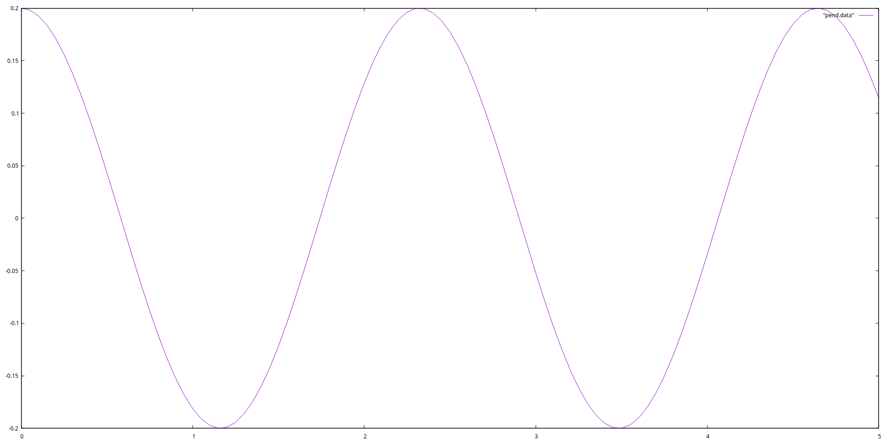

8.2. While Loops#
Block of statements in the loop body are executed repetitevly as long as a certain condition on the state of the progarm is satisfied.
The number of loops can in general depend on the program state and not be predictable in advance.
Syntax:
while (condition){
statement1;
statement2;
statement3;
}
Upon exiting the loop the nagation of the while condition holds.
Simple example:
#include <iostream>
int i = 0;
while (i < 10){
i++;
}
// condition i >= 10 holds
std::cout << i;
10
8.2.1. A More Comprehensive Example: Pendulum#
Let’s consider a simple 2D pendulum:
The equations of motions for this ideal model can be easily shown to be:
Solving this differential equation with initial conditions \(\theta(0) = \theta_{0}\), and \(\dot{\theta}(0) = 0\) we arrive at the solution:
Following program computes this formula for each time value
and outputs \(t\) and corresponding \(\theta(t)\) values seperated by blankspace in a new line to the standard output.
#include <iostream>
#include <cmath>
double l(1.34); //Length of the pendulum chord in meters
double phi0(0.2); //Amplitude i.e. the initial angle in radians
double dt(0.05); //Time-step in seconds
double T(1.0); //End-time in seconds
double t(0.0); //Initial time value
while (t <= T){
std::cout << t << " "
<< phi0 * cos(sqrt(9.81/l) * t)
<< std::endl;
t += dt;
}
Show code cell output
0 0.2
0.05 0.198173
0.1 0.192724
0.15 0.183753
0.2 0.171424
0.25 0.155963
0.3 0.137651
0.35 0.116824
0.4 0.0938622
0.45 0.069185
0.5 0.0432435
0.55 0.0165118
0.6 -0.0105217
0.65 -0.0373629
0.7 -0.0635213
0.75 -0.0885189
0.8 -0.111899
0.85 -0.133234
0.9 -0.152134
0.95 -0.168255
Full program text
#include <iostream>
#include <cmath>
double l(1.34); //Length of the pendulum chord in meters
double phi0(0.2); //Amplitude i.e. the initial angle in radians
double dt(0.05); //Time-step in seconds
double T(1.0); //End-time in seconds
double t(0.0); //Initial time value
int main(){
while (t <= T){
std::cout << t << " "
<< phi0 * cos(sqrt(9.81/l) * t)
<< std::endl;
t += dt;
}
}
We can put this program in a file pendulum.cc and compile it the usual way.
The program pendulum can be used to generate the plot of \(\theta\) vs \(t\) with gnuplot using linux i/o redirection:
$ ./pendulum >pend.dat
$ gnuplot
gnuplot> plot "pend.dat"with lines
We obtain the following plot for T = 5.0:
